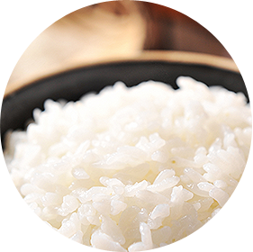

㈜데일리킹은 2006년 설립되어 국내에 쌀국수 프랜차이즈 브랜드
‘포메인’을 정착시키고, 베트남 요리 외식 문화를 대중화시킨 법인 기업입니다.
㈜데일리킹은 ‘안전한 식재료 정직한 먹거리’ 이념 하에 ‘현대그린푸드’와 업무협약을 체결,
각 가맹점에 안전하고 신선한 식자재를 공급하고 있습니다.
또한 2015년 베트남 현지법인 쌀국수 공장 ‘포시즌(PHO SEASON)을 설립하여
9가지 상급 천연 향신료를 사용한 육수용 허브백(Herb-Bags) 생산, 수년간의 연구개발 끝에 ‘햅쌀 쌀국수면’ 개발에 성공했습니다.
묵은쌀로 만든 수입 쌀국수면에 의존한 쌀국수 시장에서 ‘햅쌀 쌀국수면’이 가지는 깨끗함과 건강함은
브랜드 파워인 동시에 고객 약속의 결실입니다.
포메인 ‘햅쌀 쌀국수면’은
-
햅쌀과 물 외에 불필요한 화학 첨가물을
첨가하지 않았습니다. -
묵은쌀, 전분, 밀가루를 혼합한
수입 쌀국수면에서 나는 특유의 잡냄새가 없습니다. -

갓 지은 햅쌀밥의 향, 맑고 투명한 빛깔,
쫀득한 식감을 즐길 수 있습니다.
아무도 가려고 하지 않는 길이라도 꼭 가야 할 길이 있습니다.
묵은쌀과 전분, 밀가루를 혼합해 만든 수입 쌀국수면을 사용하는 국내 쌀국수 시장에서 햅쌀과 정제수만으로 쌀국수면을 만든다는
발상의 전환은 누군가에게는 무모해 보였을지도, 누군가에게는 불필요한 고난의 길이었을지도 모릅니다.
그러나 ㈜데일리킹에 있어 ‘포시즌(PHO SEASON)’ 설립과 ‘햅쌀 쌀국수면’ 생산은 쌀국수 시장 선두주자로서의
책임감과 ‘안전하고 정직한 먹거리’를 제공하겠다는 고객들을 향한 진심이 담긴 여정이었습니다.
수년간의 도전의 결실, 포메인 ‘햅쌀 쌀국수면’은 오직 포메인에서 만날 수 있습니다.
앞으로도 포메인으로부터 시작되는 변화와 도전이 쌀국수 시장의 기준이 될 수 있도록 원칙과 정직함이라는
본질을 잃지 않고 쌀국수 시장의 중심에서 변화를 선도하겠습니다.
안전한 식재료 정직한 먹거리, 포시즌(PHO SEASON)
포시즌 자세히 보기